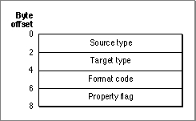

Resource Header
Figure B-18 shows the format of the transliteration resource header.Figure B-18 Format of the transliteration resource header

The resource header is the same for both the table-based and the rule-based formats:The property flag is needed because of the complex nature of the Chinese, Japanese, and Korean character sets, which include 1-byte and 2-byte characters as well as lowercase and uppercase characters. For example, to transliterate the Roman string "ki" into 2-byte Hiragana characters, the two-character string could be interpreted with as many as eight combinations of 1-byte Roman, 2-byte Roman, uppercase, and lowercase characters.
- Source type. The type of text to perform the transliteration on. Specified by an integer; the currently defined mask constants for source type are listed under the discussion of the
TransliterateTextfunction in the chapter "Script Manager" in this book.- Target type. The type of text to convert to. Specified by an integer; the currently defined target format constants are listed under the discussion of the
TransliterateTextfunction in the chapter "Script Manager" in this book.- Format code. A number that identifies the format of this transliteration resource.
- Property flag. A bit field that specifies the kinds of operations to perform on a
piece of text before or after transliteration. These are the currently defined bits of the
property flag:
Bit
numberOperation 1 Convert all 1-byte characters into 2-byte characters before
performing the transliteration.2 Convert all Roman characters to uppercase before performing
the transliteration.
To simplify matters the transliteration resource allows you to convert your source text into a common set of characters before it matches them against the transliteration rules. So, to translate the Roman string "ki" into Hiragana, you can first convert the characters into their 2-byte equivalents, then convert them into uppercase, and then perform the transliteration.
- Note
- In most 2-byte transliteration resources, bits 1 and 2 in the
property flag are set ( = 1). The reason for the preliminary conversion
of all source text to 2 bytes is that 2-byte Katakana is a superset of all
the Katakana characters; thus, it is possible to convert all the
1-byte Katakana characters to 2-byte characters but not vice versa.